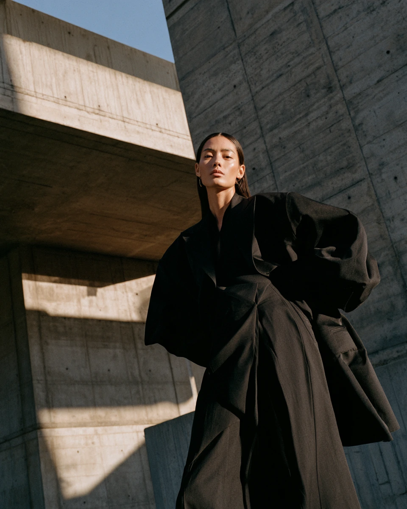
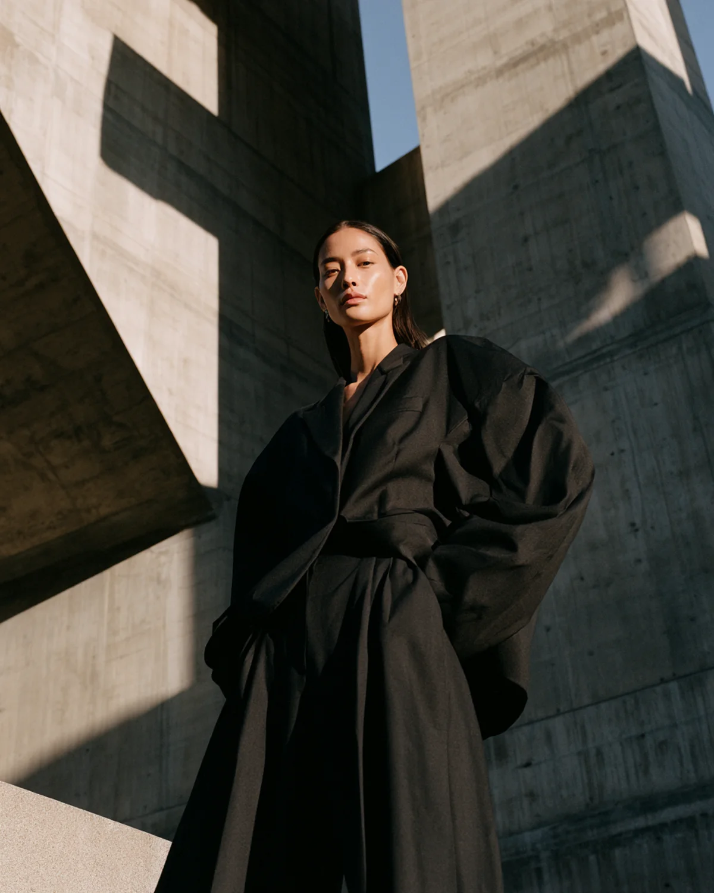
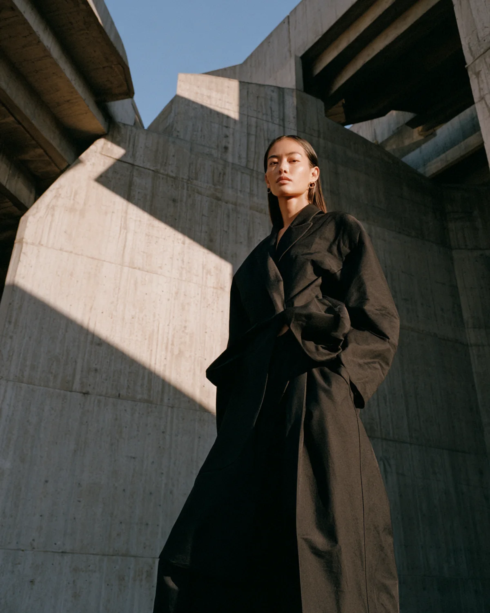
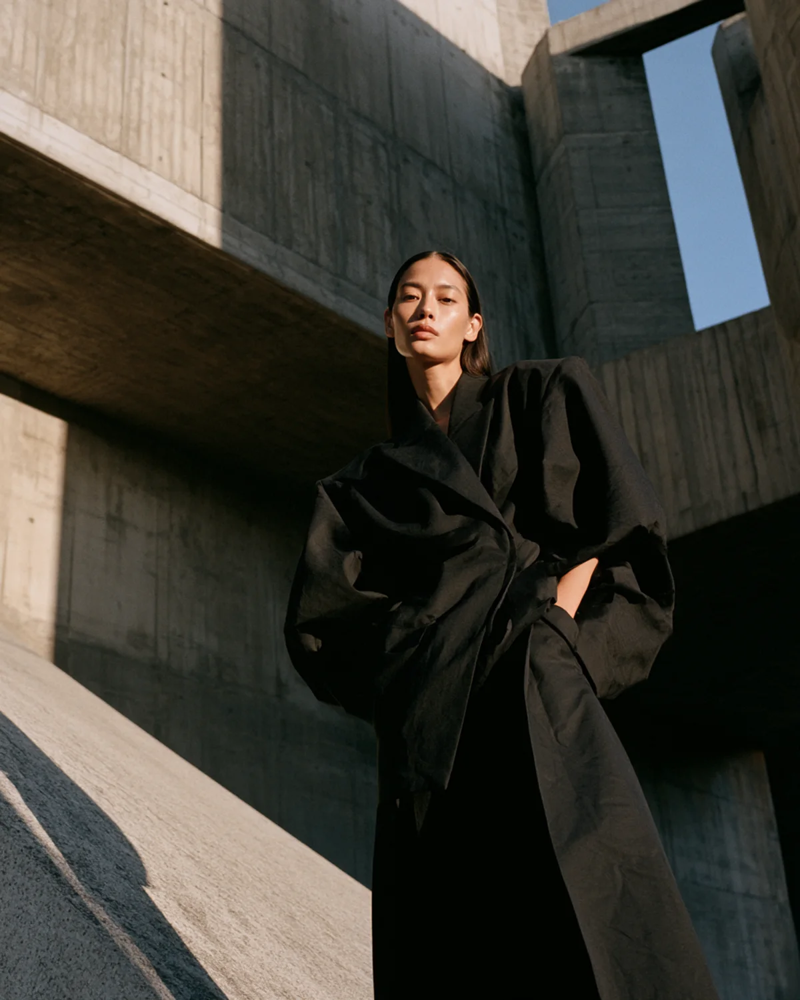

AFYKTOS / FASHION STUDY 01
NOCTURNE
An editorial study in silhouette, concrete and hard directional light.
FORM / SHADOW / PROPORTION
02LIGHT CUTS.SILHOUETTEHOLDS.
A restrained visual system built around oversized tailoring, brutalist architecture and the tension between warm light and deep black.

THE SILHOUETTE
QUIET
POWER.
Monolithic tailoring against raw concrete. The garment carries the frame while light defines its architecture.

CAMPAIGN FILM / 2026
STILLNESS
IN MOTION.
Restrained movement, controlled light and architectural scale. A campaign frame allowed to breathe.


HOLDS.
PROJECT
NOCTURNE
DISCIPLINES
Art Direction
AI Image Development
Motion Direction
Web Presentation
VISUAL LANGUAGE
Oversized tailoring
Brutalist concrete
Hard sunlight
Black / stone / sky
STATUS
Independent concept study.
Not a commercial product.
AFYKTOS / 2026